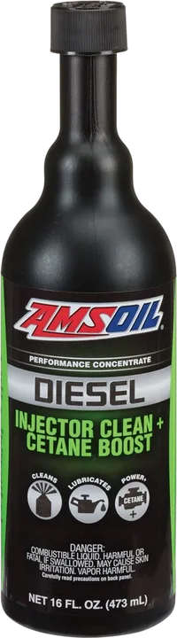

Código ADS • SAE Especialidad
AMSOIL Diesel Injector Clean + Cetane Boost
Tratamientos concentrados de grado profesional para limpiar inyectores, cámaras de combustión y válvulas, lubricar la parte superior del cilindro y elevar el índice de octano o cetano.